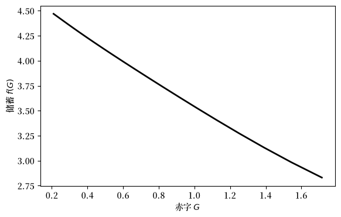
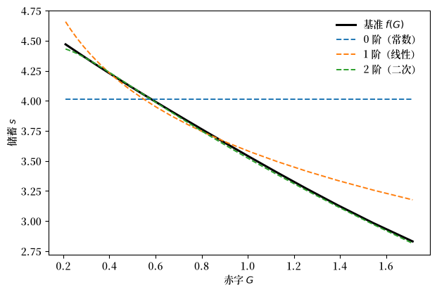
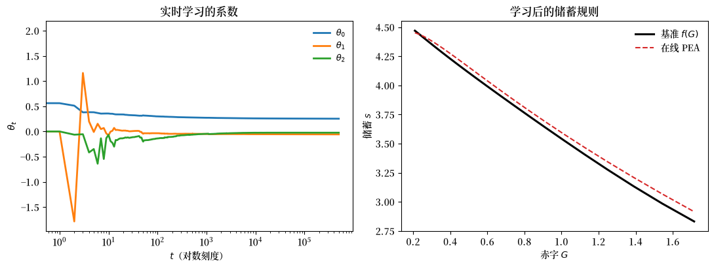
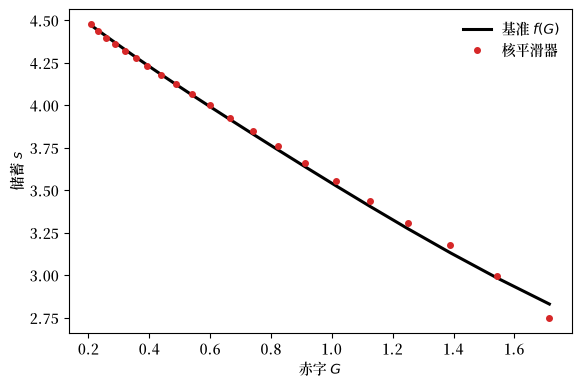
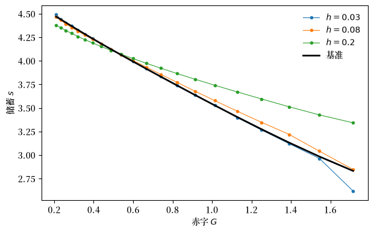

91. 学习、近似与均衡计算#
除了 Anaconda 中已有的库外，本讲座还需要以下库：
!pip install quantecon
91.1. 概述#
在 世代交叠货币经济中的适应性主体 中，一个适应性主体系统找到了一个它从未被告知过的理性预期均衡。
那里的主体为政府赤字的每一个水平学习了一个独立的储蓄率——一个非参数规则，每个状态对应一个数字。
当只有两个状态时，这种方法是有效的。
但在其他情况下，它会遇到两个障碍，二者都在 Sargent [1993] 中被提及：
一个很少出现的状态学习得很慢，因为关于它的观测值到来得很慢；
当状态数量很大时——尤其是当状态是连续的时——每个状态一个参数的做法是无望的。
计量经济学家的应对方法是对决策规则施加参数形式，\(s = f(G, \theta)\)，其中 \(\theta\) 是低维的，并利用每一个观测值来估计 \(\theta\)。
本讲座将详细探讨这样做的收益和代价。
代价与收益是同一个想法的两面。
一个参数族可以被快速学习，因为每一个观测值都能为每一个状态提供信息。
但是，一个局限于某个函数族的学习方案，只有当该族中存在某个成员支持一个理性预期均衡时，才能收敛到该均衡。
否则，它所能达到的最好结果只是一个近似均衡。
将这个问题梳理清楚，会呈现出贯穿整个有限理性研究项目的一个主题：
学习算法和均衡计算算法看起来彼此相似。
我们将把这一点具体化。
马塞特参数化预期方法——一种用于计算理性预期均衡的标准工具——原来当以递归形式书写时，恰好就是一个适应性主体进行学习的模型。
一次均衡计算，是建模者运行的一个集中式学习算法；一个学习型经济，则是主体们运行的一个去中心化的均衡计算。
计划如下：
在上一讲的世代交叠模型中引入一个连续的赤字，将均衡条件转化为储蓄规则 \(f(G)\) 中的一个泛函方程。
计算一个基准解，以便我们有可以据以衡量的真实值。
用日益丰富的函数族通过参数化预期来求解它，观察近似均衡如何逐步让位于精确均衡。
说明同一算法的递归、实时版本就是一个学习型经济。
用核估计器非参数地学习储蓄规则，并权衡它与参数化路径之间的取舍。
让我们从一些导入开始。
import numpy as np
import pandas as pd
import quantecon as qe
import matplotlib.pyplot as plt
import matplotlib as mpl # i18n
FONTPATH = "fonts/SourceHanSerifSC-SemiBold.otf" # i18n
mpl.font_manager.fontManager.addfont(FONTPATH) # i18n
mpl.rcParams['font.family'] = ['Source Han Serif SC'] # i18n
from scipy.optimize import brentq
91.2. 一个连续状态泛函方程#
我们保留 世代交叠货币经济中的适应性主体 中的世代交叠货币经济——两期存活的主体、对数效用、年轻时的禀赋 \(w_1\) 和年老时的禀赋 \(w_2\)、作为唯一价值储藏手段的货币，以及一个通过印钞为赤字融资的政府。
唯一的变化是：赤字 \(G_t\) 现在遵循一个连续马尔可夫过程，其转移核为 \(F(G', G) = \operatorname{Prob}\{G_{t+1} \leq G' \mid G_t = G\}\)。
我们寻找一个平稳均衡，其中储蓄是当前赤字的一个函数，\(s_t = f(G_t)\)。
家庭的一阶条件，在 \(s_t = f(G_t)\) 处求值，为
而政府预算约束与市场出清一起，给出了以储蓄规则表示的货币回报率，与之前完全一样（当 \(N = 1\) 时），
代入 \(R_t\)，并利用 \(f(G_t) R_t = f(G_{t+1}) - G_{t+1}\) 表示老年期的消费，将一阶条件转化为关于 \(f\) 的泛函方程：
在对数效用下，\(u'(c) = 1/c\)，并且由于 \(f(G_t)\) 在时刻 \(t\) 已知，它可以提到期望符号之外。
写成
方程 (91.1) 变为
所以整个问题就归结为求出条件期望 \(\psi(G)\)：一旦我们求得它，储蓄规则就以闭合形式得出。
这个观察是整个讲座的枢纽。
下面的每一种方法——无论是参数的还是非参数的——都是估计同一个对象 \(\psi(G)\) 的一种方式。
w1, w2 = 20.0, 10.0
def s_from_psi(ψ):
"从条件期望 ψ 中恢复储蓄规则。"
return w1 * ψ / (1 + ψ)
91.2.1. 赤字过程#
我们假设 \(\log G_t\) 服从一个 AR(1) 过程， \(\log G_{t+1} = (1-\rho)\log \bar G + \rho \log G_t + \sigma \varepsilon_{t+1}\)，并使用 Tauchen [1986] 的方法对其进行离散化，以得到用于基准解的精细网格。
参数的设定使得赤字保持在足够温和的水平，从而在每个状态下都存在一个货币均衡。
ρ, σ, G_bar = 0.7, 0.30, 0.6
mc = qe.tauchen(21, ρ, σ, mu=np.log(G_bar) * (1 - ρ), n_std=2.5)
G, P = np.exp(mc.state_values), mc.P
ergodic = mc.stationary_distributions[0] # 赤字大部分时间所处的位置
print(f"赤字网格：{len(G)} 个点，从 {G.min():.3f} 到 {G.max():.3f}")
print(f"遍历分布下的平均赤字：{ergodic @ G:.3f}")
赤字网格：21 个点，从 0.210 到 1.715
遍历分布下的平均赤字：0.654
91.3. 一个基准解#
为了衡量任何学习方案，我们首先需要真实的 \(f(G)\)。
在离散网格上，(91.1) 是一个方程组，我们通过迭代感知到实际的映射来求解它，这正是 一种奇特的有限理性定义 中的 \(T\) 映射。
猜测一个储蓄规则；用它代入右侧计算每个状态实际会引发的储蓄；重复直到两者一致。
由于 \(\psi\) 是单调的，我们可以用一个区间根查找器逐状态地反演一阶条件，这使得迭代过程更加稳健。
def solve_benchmark(G, P, damp=0.5, tol=1e-12, max_iter=5000):
"赤字网格上感知到实际的储蓄映射的不动点。"
n = len(G)
s = np.full(n, (w1 - w2) / 2)
for it in range(max_iter):
s_new = np.empty(n)
for i in range(n):
# 感知规则 s 下的 E_t[ u'(c2) (s' - G') ]
expect = sum((s[j] - G[j]) / (w2 + (s[j] - G[j])) * P[i, j] for j in range(n))
# 在 (G_i, w1) 中求解 1/(w1 - s_i) = expect / s_i 得到 s_i
foc = lambda si: 1/(w1 - si) - expect/si
s_new[i] = brentq(foc, G[i] + 1e-9, w1 - 1e-9)
if np.max(np.abs(s_new - s)) < tol:
return s, it
s = damp * s_new + (1 - damp) * s
return s, it
s_benchmark, iters = solve_benchmark(G, P)
print(f"经过 {iters} 次迭代收敛")
def foc_residual(s_rule):
"在真实核 P 下，一个储蓄规则的最大 |一阶条件误差|。"
n = len(G)
err = []
for i in range(n):
rhs = sum((s_rule[j] - G[j]) / (w2 + (s_rule[j] - G[j])) / s_rule[i] * P[i, j]
for j in range(n))
err.append(1/(w1 - s_rule[i]) - rhs)
return np.max(np.abs(err))
print(f"基准一阶条件残差：{foc_residual(s_benchmark):.2e}")
print(f"储蓄规则 f(G) 从 {s_benchmark.max():.3f}（低赤字）"
f"变化到 {s_benchmark.min():.3f}（高赤字）")
经过 224 次迭代收敛
基准一阶条件残差：2.16e-14
储蓄规则 f(G) 从 4.470（低赤字）变化到 2.831（高赤字）
fig, ax = plt.subplots(figsize=(6.5, 4))
ax.plot(G, s_benchmark, 'k-', lw=2)
ax.set_xlabel("赤字 $G$")
ax.set_ylabel("储蓄 $f(G)$")
plt.show()
findfont: Failed to find font weight normal, now using 600.
findfont: Failed to find font weight normal, now using 600.

图 91.1 基准均衡储蓄规则#
随着赤字上升，储蓄下降：更大的赤字意味着更快的货币创造、更差的货币回报率，以及更少的储蓄。
该规则呈现平缓的曲线，这一点稍后会很重要。
这个 \(f(G)\) 是任何适应性主体都无法看到的对象。
下面的一切都在尝试恢复它。
91.4. 参数化预期#
马塞特的参数化预期方法通过对 (91.2) 中的条件期望 \(\psi(G)\) 施加一个参数形式来处理 (91.1)，
其中 \(\phi(G)\) 是一个基函数向量，\(\theta\) 是一个短的系数向量。
该算法是关于 \(\theta\) 的一个不动点迭代：
给定 \(\theta\)，储蓄规则为 \(f(G) = w_1 \psi(G,\theta) / (1 + \psi(G,\theta))\)。
模拟一条较长的赤字路径，并计算每期蕴含的储蓄。
形成 (91.2) 中对象的已实现值， \(y_t = u'(w_2 + s_{t+1} - G_{t+1})(s_{t+1} - G_{t+1})\)，并将其对 \(\phi(G_t)\) 进行回归以得到新的 \(\theta\)。
迭代直至收敛。
步骤 3 中的回归所做的正是条件期望的工作：最小二乘法将已实现的 \(y_t\) 投影到当前状态的函数上，这正是 \(\mathbb{E}_t[\cdot \mid G_t]\) 所做的事情。
我们使用重新标度的 \(\log G\) 中的单项式作为基函数，并改变其阶数。
G_min, G_max = G.min(), G.max()
def simulate_deficit(T, seed=0):
"模拟 AR(1) 赤字过程，并截断至基准解的支持范围内。"
rng = np.random.default_rng(seed)
μ = np.log(G_bar) * (1 - ρ)
lg = np.empty(T)
lg[0] = np.log(G_bar)
for t in range(1, T):
lg[t] = μ + ρ * lg[t-1] + σ * rng.standard_normal()
return np.clip(np.exp(lg), G_min, G_max)
def basis(G_vals, degree):
"重新标度到 [-1, 1] 的对数赤字的单项式。"
x = 2 * (np.log(G_vals) - np.log(G_min)) / (np.log(G_max) - np.log(G_min)) - 1
return np.vstack([x**k for k in range(degree + 1)]).T
def parameterized_expectations(degree, T=40_000, n_iter=200, seed=0):
"批量参数化预期；返回网格上蕴含的储蓄规则。"
G_sim = simulate_deficit(T + 1, seed)
Φ = basis(G_sim, degree)
θ = np.zeros(degree + 1)
θ[0] = 2.0
for _ in range(n_iter):
ψ = np.clip(Φ @ θ, 0.05, 50)
s = np.clip(s_from_psi(ψ), G_sim + 0.05, w1 - 0.05)
y = (s[1:] - G_sim[1:]) / (w2 + (s[1:] - G_sim[1:])) # 已实现的被回归量
θ_new = np.linalg.lstsq(Φ[:-1], y, rcond=None)[0]
if np.max(np.abs(θ_new - θ)) < 1e-11:
θ = θ_new
break
θ = 0.4 * θ + 0.6 * θ_new
ψ_grid = np.clip(basis(G, degree) @ θ, 0.05, 50)
return s_from_psi(ψ_grid)
91.4.1. 近似均衡与精确均衡#
现在对日益丰富的函数族运行该算法：常数 \(\psi\)（储蓄与赤字无关）、线性的，以及二次的。
rules = {deg: parameterized_expectations(deg) for deg in (0, 1, 2)}
fig, ax = plt.subplots(figsize=(7, 4.5))
ax.plot(G, s_benchmark, 'k-', lw=2.2, label="基准 $f(G)$")
labels = {0: "0 阶（常数）", 1: "1 阶（线性）", 2: "2 阶（二次）"}
for deg, colour in [(0, 'C0'), (1, 'C1'), (2, 'C2')]:
ax.plot(G, rules[deg], '--', color=colour, lw=1.4, label=labels[deg])
ax.set_xlabel("赤字 $G$")
ax.set_ylabel("储蓄 $s$")
ax.legend(frameon=False)
plt.show()

图 91.2 阶数递增的参数化预期规则#
常数族根本无法表示一个依赖于赤字的储蓄规则，因此它所能做到的最好效果就是一条穿过数据中部的水平线。
这条水平线确实是一个近似均衡——学习方案的一个不动点——但它只是平均意义上满足一阶条件，而非逐状态满足。
线性族的表现要好得多，但在两端弯曲的方向错误。
二次族在视觉上与基准解几乎无法区分：因为这里的真实 \(f(G)\) 非常接近二次函数，一个三参数的规则基本上完美地捕捉到了它。
我们可以用两种方式来量化”有多接近”：与基准解的距离，以及在真实核下一阶条件的残差——后者是衡量一个近似均衡与精确均衡有多远的诚实指标。
rows = []
for deg in (0, 1, 2):
s_hat = rules[deg]
sup = np.max(np.abs(s_hat - s_benchmark))
rms = np.sqrt(ergodic @ (s_hat - s_benchmark)**2)
rows.append([labels[deg], sup, rms, foc_residual(s_hat)])
pd.DataFrame(rows, columns=["族", "sup $|s - f|$",
"遍历 RMS", "一阶条件残差"]).set_index("族").round(4)
| sup $|s - f|$ | 遍历 RMS | 一阶条件残差 | |
|---|---|---|---|
| 族 | |||
| 0 阶（常数） | 1.1826 | 0.3230 | 0.0090 |
| 1 阶（线性） | 0.3458 | 0.0671 | 0.0039 |
| 2 阶（二次） | 0.0386 | 0.0110 | 0.0006 |
随着函数族变得更加丰富，每一列都在下降。
一阶条件残差——这个量在理性预期均衡处恰好为零，而在近似均衡处为正——从常数族到二次族下降了超过一个数量级。
备注
在有限数据下，更丰富并不总是更好。
将阶数推得更高，多余的项就会开始追逐赤字分布尾部的抽样噪声——那里观测值稀少，而 sup 范数误差可能会重新上升，即便在主体实际所处位置的拟合正在改善。
这与 世代交叠货币经济中的适应性主体 中缓慢学习的稀有状态是同一现象，只是从近似的角度来看：一个方案在数据所在之处拟合得很好，而对一个很少被访问的区域拟合不佳，在预期效用意义上代价很小。
练习 91.1 探讨了这一点。
91.5. 学习就是均衡计算#
到目前为止，参数化预期是我们运行来计算均衡的算法。
现在到了整个讲座的关键点。
将同一个算法以递归形式书写——每期随着一个新观测值的到来更新一次 \(\theta\)，而不是对整个模拟面板重新回归——它就变成了一个适应性主体实时学习的模型。
递归形式就是普通的递归最小二乘法：
其中 \(y_t\) 与之前相同，是已实现的被回归量，而 \(R_t\) 追踪回归量的二阶矩。
这与我们在 世代交叠货币经济中的适应性主体 中遇到的对象是完全相同的：一个具有 \(1/t\) 增益的随机逼近递归。
与那里逐状态学习的唯一区别是，这里的 \(\theta\) 索引的是一个参数化规则，因此单个观测值可以同时更新整个储蓄规则。
def online_pea(degree=2, T=500_000, seed=0, ridge=1e-3):
"""
递归最小二乘参数化预期：学习型经济。
时刻 t 的年轻主体根据当前的 θ 进行储蓄；下一期欧拉方程的
已实现值到来，θ 被更新一次。返回 θ 的路径以及最终蕴含的
储蓄规则。
"""
G_sim = simulate_deficit(T, seed)
θ = np.array([2.0] + [0.0] * degree)
R = ridge * np.eye(degree + 1)
def saving(g, θ):
ψ = np.clip(basis(np.array([g]), degree)[0] @ θ, 0.05, 50)
return np.clip(s_from_psi(ψ), g + 0.05, w1 - 0.05)
x_prev = None
θ_path = np.empty((T, degree + 1))
for t in range(T):
s_t = saving(G_sim[t], θ)
if x_prev is not None: # t-1 期的欧拉方程现在实现
y = (s_t - G_sim[t]) / (w2 + (s_t - G_sim[t]))
gain = 1.0 / (t + 1)
R += gain * (np.outer(x_prev, x_prev) - R)
θ = θ + gain * np.linalg.solve(R, x_prev * (y - x_prev @ θ))
x_prev = basis(np.array([G_sim[t]]), degree)[0]
θ_path[t] = θ
s_grid = np.array([saving(g, θ) for g in G])
return θ_path, s_grid
θ_path, s_online = online_pea()
print(f"在线 PEA：sup 误差 = {np.max(np.abs(s_online - s_benchmark)):.4f}， "
f"遍历 RMS = {np.sqrt(ergodic @ (s_online - s_benchmark)**2):.4f}")
在线 PEA：sup 误差 = 0.0837， 遍历 RMS = 0.0480
fig, axes = plt.subplots(1, 2, figsize=(11, 4.2))
axes[0].plot(θ_path[:, 0], label=r"$\theta_0$", lw=2)
axes[0].plot(θ_path[:, 1], label=r"$\theta_1$", lw=2)
axes[0].plot(θ_path[:, 2], label=r"$\theta_2$", lw=2)
axes[0].set_xscale('log')
axes[0].set_xlabel("$t$（对数刻度）")
axes[0].set_ylabel(r"$\theta_t$")
axes[0].set_title("实时学习的系数")
axes[0].legend(frameon=False, fontsize=9)
axes[1].plot(G, s_benchmark, 'k-', lw=2.2, label="基准 $f(G)$")
axes[1].plot(G, s_online, 'C3--', lw=1.5, label="在线 PEA")
axes[1].set_xlabel("赤字 $G$")
axes[1].set_ylabel("储蓄 $s$")
axes[1].set_title("学习后的储蓄规则")
axes[1].legend(frameon=False)
plt.tight_layout()
plt.show()
findfont: Failed to find font weight normal, now using 600.
findfont: Failed to find font weight normal, now using 600.
findfont: Failed to find font weight normal, now using 600.

图 91.3 储蓄规则的在线学习#
系数逐渐稳定下来，它们所蕴含的储蓄规则紧密地追踪着基准解。
剩余的微小差距是一个尚未完全收敛的方案的标志。
收敛是缓慢的：\(1/t\) 增益能保证收敛，但并不加快它，在线方案需要数十万期才能达到批量算法在寥寥几次遍历中所达到的精度。
这个差距正是一个被限制只能从经验到来时逐步学习的主体，与一个可以随时重复使用整个模拟历史的建模者之间的区别。
但极限是同一个对象。
萨金特的总结：
学习算法和均衡计算算法看起来彼此相似。均衡计算算法常常可以被解释为集中式学习算法，其中模型构建者扮演”社会规划者”的角色，摸索出一组能满足所有个体最优条件和市场出清条件的定价函数和主体决策规则。我们也已经看到，具有有限理性主体的学习系统有时可以被解释为去中心化的均衡计算算法。
这就是马塞特之所以通过早期关于最小二乘学习动态的研究而得出参数化预期作为一种计算方法的原因。
这二者是同一个递归，只是从两个方向去阅读它。
91.6. 没有函数形式的学习#
参数化路径速度快，但把一切都押注在函数族上。
如果 \(\{f(\cdot, \theta)\}\) 中没有一个成员能支持一个均衡，那么该方案就会收敛到一个近似均衡然后停下来。
非参数替代方案不施加任何函数形式。
遵循 Chen and White [1998] 的递归核估计器，主体直接从过去已实现值的核加权平均中估计条件期望 \(\psi(G)\)，让数据自己选择形状。
递归核密度估计器本身就是一个随机逼近递归，
带宽 \(h_t \searrow 0\)，与本讲座中其他一切具有相同的 \(1/t\) 增益形式，只不过现在更新的是整个估计的密度，而非一个有限的参数向量。
我们下面实现的是该递归的批量版本：\(\psi(G)\) 的内达拉亚-沃森估计，形式为已实现被回归量 \(y\) 在整个模拟历史上的核加权平均，权重随 \(\log G\) 上距离的增大而衰减，并迭代至不动点。
以批量形式呈现能保持比较的清晰性，因为我们用以衡量它的参数化方案也是批量形式的。
上面的递归展示与这个平滑器的关系，恰好正如 (91.3) 与上一节批量算法的关系一样：同一个估计量，只是读作一个实时学习规则，而不是一个计算过程。
def kernel_smoother(T=400_000, seed=0, h=0.06, n_iter=40, damp=0.5):
"""
非参数参数化预期。ψ(G) 通过对已实现被回归量的内达拉亚-沃森
平滑器来估计——没有函数形式。该规则被迭代至一个自洽的不动点。
"""
G_sim = simulate_deficit(T, seed)
log_sim = np.log(G_sim[:-1])
# 每个网格点相对于整个模拟历史的核权重
W = np.array([np.exp(-0.5 * ((np.log(g) - log_sim) / h)**2) for g in G])
W /= W.sum(axis=1, keepdims=True)
s_grid = np.full(len(G), (w1 - w2) / 2)
for _ in range(n_iter):
s = np.clip(np.interp(np.log(G_sim), np.log(G), s_grid), G_sim + 0.05, w1 - 0.05)
y = (s[1:] - G_sim[1:]) / (w2 + (s[1:] - G_sim[1:]))
ψ = W @ y
s_new = np.clip(s_from_psi(ψ), G + 0.05, w1 - 0.05)
if np.max(np.abs(s_new - s_grid)) < 1e-8:
s_grid = s_new
break
s_grid = damp * s_new + (1 - damp) * s_grid
return s_grid
s_kernel = kernel_smoother()
print(f"核平滑器：sup 误差 = {np.max(np.abs(s_kernel - s_benchmark)):.4f}， "
f"遍历 RMS = {np.sqrt(ergodic @ (s_kernel - s_benchmark)**2):.4f}")
核平滑器：sup 误差 = 0.0816， 遍历 RMS = 0.0166
fig, ax = plt.subplots(figsize=(6.5, 4.2))
ax.plot(G, s_benchmark, 'k-', lw=2.2, label="基准 $f(G)$")
ax.plot(G, s_kernel, 'C3o', ms=4, label="核平滑器")
ax.set_xlabel("赤字 $G$")
ax.set_ylabel("储蓄 $s$")
ax.legend(frameon=False)
plt.show()

图 91.4 核平滑器对储蓄规则的近似#
在没有施加任何函数形式的情况下，核学习器恢复基准解的精度与二次参数化规则大致相当。
两者在这里表现得同样好，这并非我们可以依赖的巧合。
这是因为真实的 \(f(G)\)恰好几乎正好是二次的，所以我们所选择的参数族几乎完全正确。
当情况并非如此时，二者就会分道扬镳，其间的权衡与计量经济学中的熟悉情形一样：
参数化方案学习速度快，外推也很顺畅，但其好坏完全取决于所选的函数族；一个选择不当的函数族会得出一个近似均衡，且没有任何警示；
非参数方案不会被一个糟糕的函数形式误导，但要为其灵活性付出学习较慢的代价，并且在数据稀疏之处——即赤字取值范围的边缘——会产生偏差，因为核在那里几乎没有邻居可供平均。
两者都是同一形状的递归。
一个适应性主体应该使用哪一种，再一次成为有限理性研究项目公开摆上台面的建模选择之一，而理性预期悄悄替我们做出了这一选择。
91.7. 结束语#
世代交叠模型为我们提供了一个干净的实验室，用以说明一条普遍适用的道理。
一个身处状态空间庞大或连续环境中的适应性主体，无法为每一种可能情形学习一个独立的反应。
它必须进行泛化，施加某种结构，使得有限的经验能够为整个状态空间上的行为提供信息。
这种结构究竟是一个低阶多项式、一个核带宽，还是别的什么，是一个具有实际后果的建模选择：它决定了可达到的极限究竟是一个理性预期均衡，还是仅仅是对它的一个近似。
正是这同一种泛化行为，使得学习与均衡计算成为同一个对象的两个侧面。
马塞特的算法通过参数化一个期望并进行回归来计算均衡；一个适应性主体通过参数化一个期望并进行回归来学习；这两个递归是完全一致的。
下一讲，人工智能主体中作为交换媒介的货币，将泛化问题推向了最尖锐的形式。
在那里，状态空间和行动空间都大到无法枚举规则的地步，主体必须使用约翰·霍兰德的分类器系统和遗传算法（而非本讲中的最小二乘法和核方法机制）从零开始发现一套紧凑的良好规则。
91.8. 练习#
练习 91.1
上文的说明指出，将多项式阶数推得过高可能会损害 sup 范数拟合，因为高阶项会追逐赤字分布稀疏访问尾部的抽样噪声。
请验证这一点。
对阶数 \(0\) 到 \(5\) 运行批量参数化预期算法，并报告相对于基准解的两种误差度量：整个网格上的 sup 范数，以及按赤字的遍历分布加权的 RMS 误差（即按主体实际活动之处加权）。
哪一个度量随阶数单调变化，哪一个不是？
请解释。
解答 练习 91.1
rows = []
for deg in range(6):
s_hat = parameterized_expectations(deg, T=150_000)
sup = np.max(np.abs(s_hat - s_benchmark))
rms = np.sqrt(ergodic @ (s_hat - s_benchmark)**2)
rows.append([deg, sup, rms])
pd.DataFrame(rows, columns=["阶数", "sup 误差（整个网格）",
"遍历 RMS（主体所处之地）"]).set_index("阶数").round(4)
| sup 误差（整个网格） | 遍历 RMS（主体所处之地） | |
|---|---|---|
| 阶数 | ||
| 0 | 1.1880 | 0.3243 |
| 1 | 0.3505 | 0.0677 |
| 2 | 0.0472 | 0.0128 |
| 3 | 0.1561 | 0.0203 |
| 4 | 0.1854 | 0.0221 |
| 5 | 0.2201 | 0.0241 |
遍历加权误差先单调下降，然后趋于平缓：一旦函数族足够丰富，能够捕捉到赤字实际所处位置的 \(f\) 的曲率，额外的项就不再增加任何价值。
sup 范数误差起初下降，但随后又重新上升。
高阶多项式在中心区域拟合得很好，但在网格两端振荡，而遍历分布在那里几乎没有质量，因此回归几乎没有数据来约束它们。
这正是 世代交叠货币经济中的适应性主体 中稀有状态问题在近似方面的镜像。
一个学习方案会把它的精度分配到观测值所在的地方。
对一个很少被访问的区域拟合不佳，在 sup 范数中会表现得很明显，但在预期效用中几乎不产生任何代价，这正是遍历加权度量才是具有经济意义的度量的原因。
练习 91.2
常数族（0 阶）给出了一个近似均衡：一个单一的储蓄率，与赤字无关，仅在平均意义上满足一阶条件。
这里有一个自然的基准可供比较。
计算一个 0 阶参数化预期主体所收敛到的单一储蓄率 \(\bar s\)，并将其与赤字永远固定在其均值 \(\bar G\) 处的经济中的储蓄率进行比较。
它们相同吗？
它们应该相同吗？
解答 练习 91.2
# 0 阶近似均衡
s_const = parameterized_expectations(0)[0] # 在各状态间为常数
# 赤字固定在其均值处的确定性经济。与上一讲中赤字固定的
# 模型一样，它有两个稳态；我们取高储蓄（低通胀）的那个，
# 通过将储蓄映射迭代至其稳定不动点来求得。
G_mean = ergodic @ G
def deterministic_saving(G_fixed, damp=0.5):
s = (w1 - w2) / 2
for _ in range(1000):
ψ = (s - G_fixed) / (w2 + (s - G_fixed))
s = damp * s + (1 - damp) * s_from_psi(ψ)
return s
s_fixed = deterministic_saving(G_mean)
print(f"0 阶近似均衡储蓄率：{s_const:.4f}")
print(f"平均赤字 E[G]：{G_mean:.4f}")
print(f"赤字固定在 E[G] 处的经济中的储蓄率：{s_fixed:.4f}")
0 阶近似均衡储蓄率：4.0137
平均赤字 E[G]：0.6537
赤字固定在 E[G] 处的经济中的储蓄率：4.0327
它们接近但不相等。
0 阶主体选择的是在整个随机经济中最能拟合一阶条件的单一储蓄率——这是对实现的回报率分布求得的平均值。
固定赤字经济则用一个在均值赤字处退化的单点分布取代了整个分布。
按照詹森式的论证，这两者不必一致：一阶条件在回报率上是非线性的，因此它在一个分散的赤字分布上的期望值，不同于它在均值赤字处的值。
只有当赤字一开始就是确定性的，二者才会一致。
其中的教训是，一个近似均衡并非一个简单的”确定性等价”对象。
即使是最粗糙的单参数学习器，也在对它所经历的整个结果分布做出反应，而不是对一个点预测做出反应。
练习 91.3
非参数核学习器有一个自由的调节常数：带宽 \(h\)。
请探索它的影响。
对一系列带宽运行核学习器，并报告相对于基准解的 sup 误差和遍历加权误差。
解释这种权衡的形状，并将两种失败模式与偏差-方差分解联系起来。
解答 练习 91.3
rows = []
for h in (0.03, 0.05, 0.08, 0.12, 0.20):
s_h = kernel_smoother(h=h)
sup = np.max(np.abs(s_h - s_benchmark))
rms = np.sqrt(ergodic @ (s_h - s_benchmark)**2)
rows.append([h, sup, rms])
table = pd.DataFrame(rows, columns=["带宽 $h$", "sup 误差",
"遍历 RMS"]).set_index("带宽 $h$")
table.round(4)
| sup 误差 | 遍历 RMS | |
|---|---|---|
| 带宽 $h$ | ||
| 0.03 | 0.2140 | 0.0197 |
| 0.05 | 0.1269 | 0.0148 |
| 0.08 | 0.0873 | 0.0282 |
| 0.12 | 0.2045 | 0.0626 |
| 0.20 | 0.5110 | 0.1312 |
fig, ax = plt.subplots(figsize=(7, 4.2))
for h, colour in [(0.03, 'C0'), (0.08, 'C1'), (0.20, 'C2')]:
ax.plot(G, kernel_smoother(h=h), 'o-', ms=3, lw=0.8, color=colour, label=f"$h = {h}$")
ax.plot(G, s_benchmark, 'k-', lw=2, label="基准")
ax.set_xlabel("赤字 $G$")
ax.set_ylabel("储蓄 $s$")
ax.legend(frameon=False)
plt.show()

存在一个内部最优点。
较小的带宽只对少数几个邻居求平均，因此估计带有噪声：它围绕基准解摆动，而在邻居稀少的边缘处摆动最为严重。
这是权衡中的方差一端。
较大的带宽在较宽的窗口上求平均，使估计变得平滑，但也压平了 \(f(G)\) 的真实曲率，因而规则被拉向一条直线。
这是偏差一端。
带宽是 练习 91.1 中多项式阶数的非参数对应物：二者都控制着学习器所施加的结构多少，并且都有一个最佳点，在因灵活性不足而导致的拟合不佳与因灵活性过多而导致的噪声之间进行权衡。
有限理性研究项目并不能告诉我们这个最佳点在哪里；这又是一个用一系列合理的备选方案取代理性预期这一单一约束的选择。